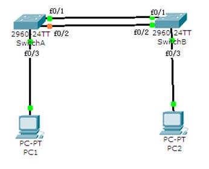

实训任务3：防止路由环路

1．根据上面的拓扑结构图搭建网络。
2．按下面描述配置PC机，并测试连通性。
PC1的IP地址：192.168.1.1，子网掩码：255.255.255.0；
PC2的IP地址：192.168.1.2，子网掩码：255.255.255.0；
3．配置两台交换机的主机名分别为SwitchA和SwitchB。
交换机SwitchA
Switch(config)# hostname SwitchA
交换机SwitchB
Switch(config)# hostname SwitchB
4．分别查看两台交换机的生成树状态。
交换机SwitchA
switchA# show spanning-tree
交换机SwitchB
switchB# show spanning-tree
5．修改非根交换机的优先级为4096，使其成为根交换机，观察此时交换机端口颜色变化，并等稳定后再次查看两台交换机的生成树状态，测试两台PC机的连通性。
交换机SwitchA
switchA(config)# spanning-tree vlan 1 priority 4096
switchA# show spanning-tree
6．修改当前非根交换机的非根端口的优先级为32，观察此时交换机端口颜色变化，再次查看本交换机的生成树状态，并查看修改端口的状态，测试两台PC机的连通性。
交换机SwitchB
switchB(config-if)# spanning-tree vlan 1 port-priority 32
switchB# show spanning-tree
switchB# show spanning-tree interface f0/2
7．删除当前根端口连线，观察当前非根交换机的非根端口的状态变化，并测试两台PC机的连通性。
8．修改交换机的生成树类型为rapid-pvst，再次重复上面的操作。
交换机SwitchA
switchA(config)# spanning-tree mode rapid-pvst
交换机SwitchB
switchB(config)# spanning-tree mode rapid-pvst